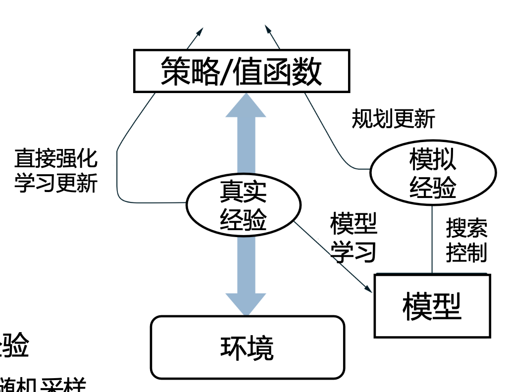

第六章 规划与学习
第六章 规划与学习
简单的回顾
- 在之前的内容中, 给定模型时我们时怎么做的?
- 动态规划、策略迭代(策略评估与策略提升)、值迭代
- 什么时候我们需要无模型的方法?
- MDP太多或者不知道MDP的时候
- 在之前的学习中, 没有MDP时我们时怎么做的?
- 采集交互数据, 利用MC或者TD估计值函数
除此之外, 我们能怎么做?
基于模型的规划 + 无模型学习
思考一个场景: 当你下棋的时候，如果走下一步有时间思考你会做什么？
你会在你的心中建立一个虚拟的棋盘, 然后基于这个模型进行推演规划
显然, 你在此时在进行一个 基于模型的规划+无模型学习 的强化学习:
- 心中的推演是 基于模型的规划;
- 你真实的去落子, 然后得到对手的反馈, 然后你可以大概知道自己是否下了一手好棋, 你这是在进行无模型学习.
那我们什么时需要将规划和学习进行结合呢?
- 虽然没有模型, 但是可以利用采集的经验学一个近似的模型
- 虽然已有MDP模型的规模太大无法做DP, 但完全不用也有点浪费
既然无模型的学习算法科技解决问题, 为什么要学习一个假模型呢?
- 有些情况下与真实环境交互代价很高，例如机器人在真实环境下训练，在模型中推演规划可以降低采样成本
- 学习一个模型可以有助于分布式并行学习，从而提高学习效率
基本概念介绍
模型(Model)
给定一个状态和动作, 模型能够预测下一个状态和奖励的分布: 即\(p(s',r|s,a)\)
- \(s,a\): 给定的状态和动作
- \(s',r\): 下一个状态和奖励
模型分类:
- 分布模型(distribution model)
- 描述了轨迹的所有可能性及其概率
- 样本模型(sample model)
- 根据概率进行采样, 只产生一条可能的轨迹
规划(Planning)
在强化学习中规划是指利用模型来提升策略的方法，例如动态规划
或者说规划指 输入一个模型, 输出一个策略的搜索过程
规划与学习(Planning and Learning)
- 不同点
- 规划: 利用模型产生的模拟经验
- 学习: 利用环境产生的真实经验
- 相同点
- 通过回溯(back-up)更新值函数的估计
- 统一来看, 学习的方法可以用在模拟经验上
强化学习的两个重要指标
- 算法收敛后策略在初始状态下的期望回报
- 样本复杂度
- 算法达到收敛需要在真实环境中采样的样本数量
- 基于模型的方法可以增加模拟采样经验，往往可以获得更低的样本复杂度，这就是我们在强化学习算法中使用模型的根本动机
利用学习的模型
基本思想: 在强化学习中，有时虽然我们不知道能够反应真实环境的模型，但是我们可以在与环境交互的过程中，通过采集真实经验，边学习策略，边利用真实经验学习模型，这样我们就可以利用学习到的模型生成额外的模拟经验，从而降低算法的样本复杂度
Dyna算法框架(集成规划和学习)

- 和环境交互产生真实经验
- 左边代表直接强化学习
- 更新值函数和策略
- 右下边代表学习模型
- 使用真实经验更新模型
- 右边代表基于模型的规划
- 基于模型随机采样得到模拟经验
- 只从以前得到的状态动作对随机采样
- 使用模拟经验做规划更新值函数和策略
- 基于模型随机采样得到模拟经验
因为没有采样到的状态动作对在模拟的模型中是无法处理的, 采样这样的状态动作对只会被退化为随机策略

\(Model(s,a)\): 拟合得到的环境模型, 预测\((s,a)\)对的下一个状态和奖励
Dyna算法中的采样方法
Dyna算法中最基本的采样方法是均匀随机采样. 但是, 实际上我们会希望模拟的经验和更新应集中在一些特殊的状态动作上. (比如在终点附近的经验、成功达到终点的经验)
所以, 此时我们希望能有一个更有针对性的采样方法.
有两种经验是我们比较希望去采样的:
- 成功经验的周围经验
- 某些会导致较大的值更新的经验
出于这种希望, 优先级采样法出现了:
- 设置优先级更新队列, 根据值改变的幅度定义优先级
\[ P\leftarrow |R + \gamma \max\limits_{a} Q(S', a) - Q(S,A)| \]

利用模型方法的优劣
- 优势
- 提升采样的利用率
- 智能体可以减少与真实环境的交互
- 增加可并行性, 提升学习效率
- 劣势
- 模型学习的表现会影响策略学习的结果
- 如果真实环境有更新或者调整, 模型需要通过多次迭代才能学到新的变化
决策时规划
决策时规划与背景规划
- 背景规划(Background Planning)
- 规划是为了更新一些状态值供后续动作的选择
- 如: 动态规划、Dyna
- 决策时规划(Decision-time Planning)
- 规划只着眼于当前状态的动作选择
- 在不需要快速反应的应用中很有效、如棋类游戏
实时动态规划(Real Time DP)
- 传统动态规划扫描全部状态依次进行更新
- 实时动态规划和传统动态规划的区别
- 实时的轨迹采样
- 只更新轨迹访问的状态值
- 优势
- 能够跳过策略无关的状态
- 在解决状态集合规模大的问题上具有优势
- 满足一定条件下可以以概率1收敛到最优策略

蒙特卡洛树搜索(Mente Carlo Tree Search, MCTS)

启发式搜索
- 访问到当前状态(根节点), 对后续可能的情况进行树结构展开
- 回溯到当前状态(根节点), 方式类似于值函数的更新方式
- 决策时规划着重于当前状态
- 可以看做是贪心策略在单步情况下的扩展
- 启发式搜索看多步规划下, 当前状态的最优行动
- 搜索越深, 计算量越大, 得到的动作越接近最优

Rollout算法
一个Rollout就是从当前状态进行一次模拟试验获得一条轨迹
在当前状态下选取蒙特卡洛估计值最高的动作
在下一个状态重复上述步骤
特点:
- 决策时规划区别于前面介绍的MC值函数估计，它只关心当前状态下的值函数估计，只解决当前状态下的决策问题
- 直接目的本质上类似于策略评估和改进，寻找更优的策略
MCTS

一个简单的例子:

UCT函数是为了鼓励尝试那些尝试次数较少的状态
MCTS可以独立应用于强化学习任务中, 也可以结合其他背景规划方法, 利用提前学好的策略和价值函数来帮助MCTS来进行更有效的评估决策
决策时规划总结
决策时规划与我们之前学习的无模型方法的区别是:
对于有些问题，难以通过训练直接学习到一个可用的策略时，只要决策时还有时间，就可以借助基于当前状态的规划做到更好
这就像是当你遇到难题时，你可以说让我想一想，然后借助头脑里的模型展开推演，在可接受的时间范围内找到一个更好的决策
推演的过程就像是在头脑中展开一颗非常大的树，然后针对不同的分支运用rollout的方法看到最终的结果来返回来推测当下那个选择更好
同时，如果能够把平时学到的策略和价值函数运用到决策时规划当中，效果可能会更好